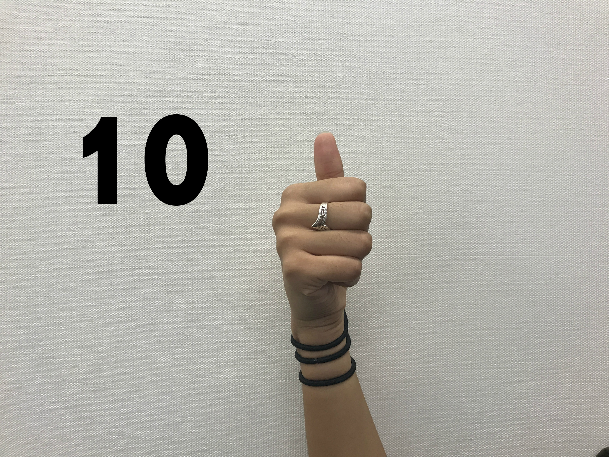
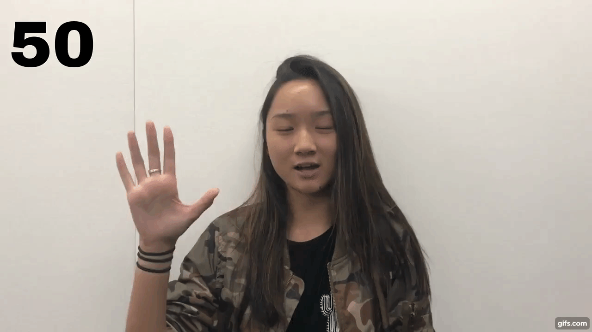
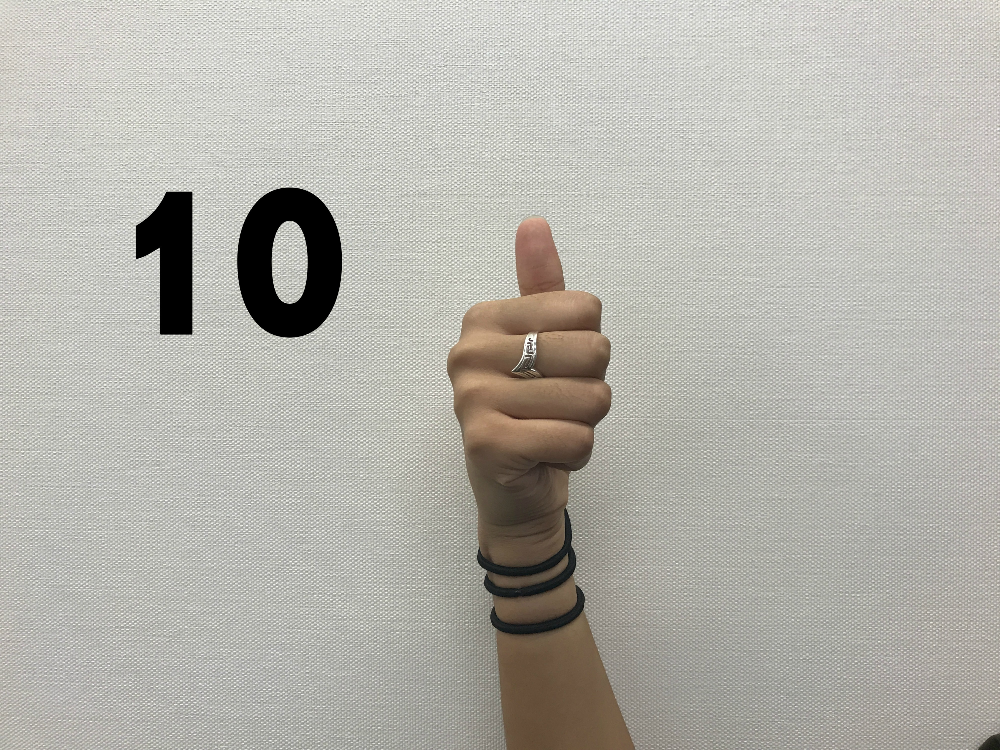
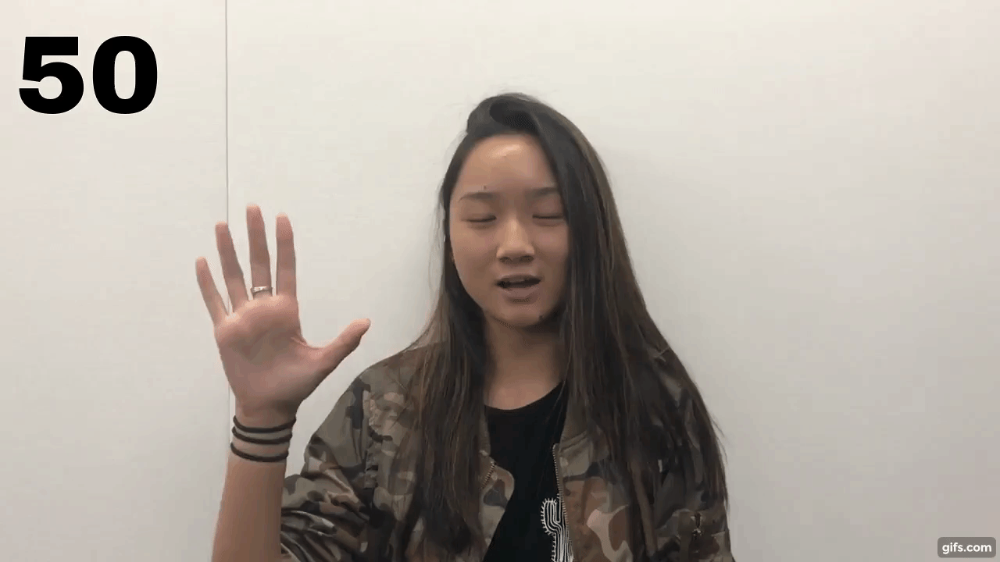

When done as isolated signs, numbers 1-5 are signed with the back of your hand facing the person you are signing to, but numbers 6-9 are signed with your palm facing out. However, when signing a series of numbers (ex: phone number) numbers 1-5 are also signed with your palm facing out.
Longer numbers are signed the way you would say them in English. For example, "1842" would be signed as "18" then "42". Most people sign double numbers by bouncing your hand twice, moving left to right. All double-digit numbers are simply signed as the sign for the first digit, followed by the sign for the second digit (ex: 34 is signed as 3, 4.)